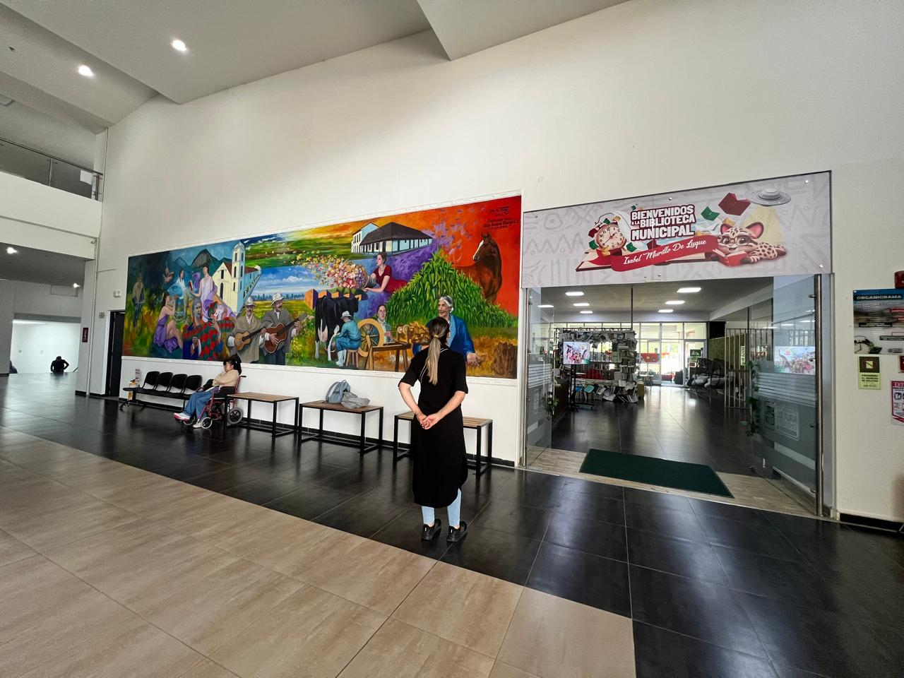

Sede principal
Biblioteca Pública Municipal de Tenjo, Isabel Murillo de Luque
Centro Cultural Nhora Matallana Forero
El punto de partida: un espacio abierto para leer, investigar, encontrarse y participar en la vida cultural del municipio.
Horarios de atención
De lunes a viernes de 8:00 a.m. a 1:00 p.m. y de 2:00 p.m. a 7:00 p.m.
Sábados de 8:00 a.m. a 1:00 p.m.